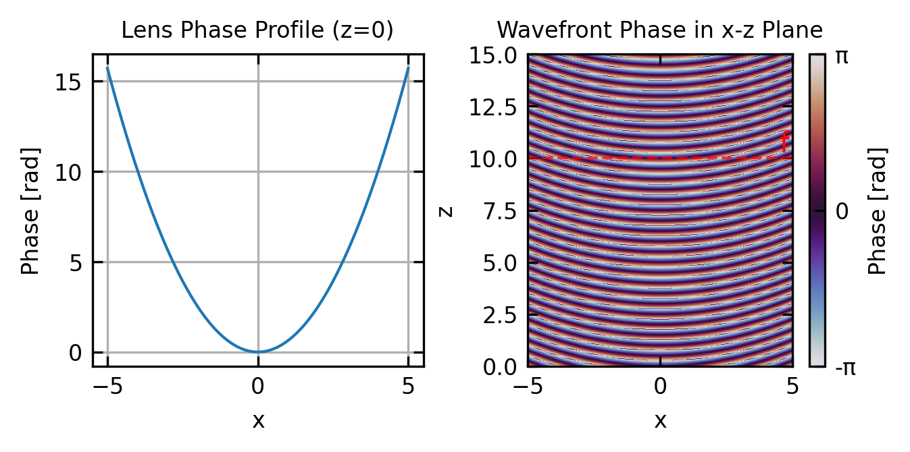
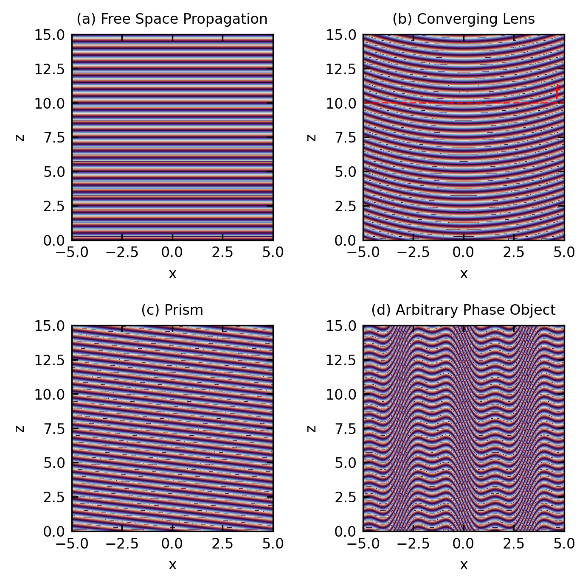
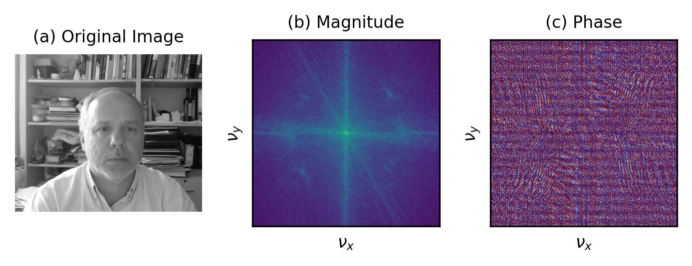
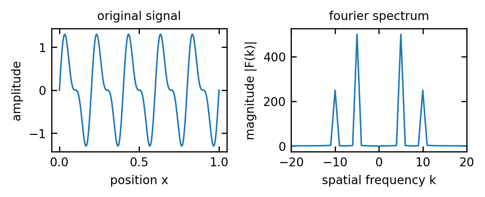
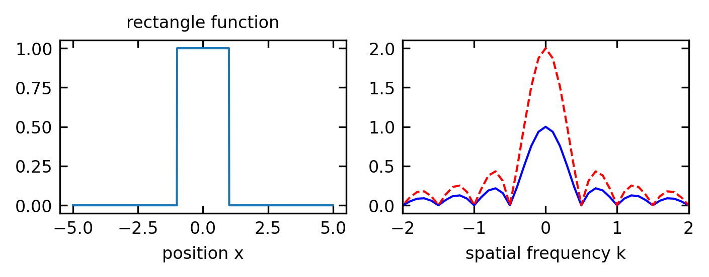
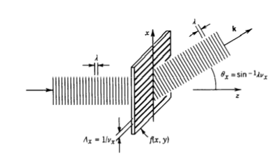
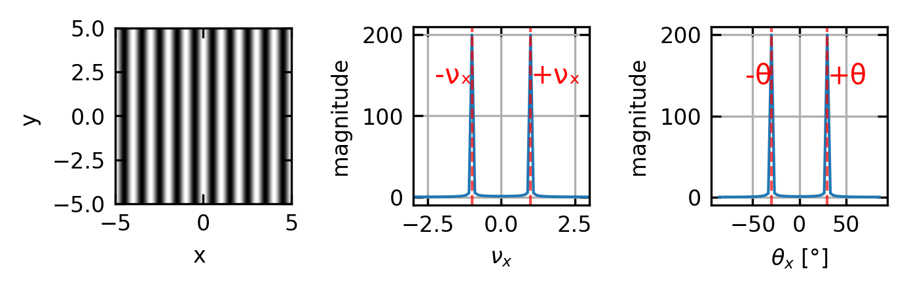

7 Introduction to Fourier Optics
Fourier optics offers a robust analytical approach to understanding light propagation through optical systems by employing Fourier analysis techniques on optical fields. This framework elegantly connects image formation and optical resolution to the transmission of spatial information via light waves. Our exploration begins with examining complex transmittance functions, which give us fundamental insights into how various samples shape optical wavefronts. From this foundation, we will progress to the essential principles of Fourier optics and the associated diffraction integrals.
7.0.1 Transmission
When light interacts with an optical component or object, its amplitude and phase can be modified. Following Saleh and Teich’s formalism, we can characterize this interaction using the complex transmission factor \(t(x,y)\), which is defined as the ratio of the output field amplitude to the input field amplitude at each point \((x,y)\) in a plane:
\[t(x,y) = \frac{U_{\text{out}}(x,y)}{U_{\text{in}}(x,y)}\]
This transmission factor is generally complex-valued, with its magnitude representing amplitude modulation and its phase representing phase modulation of the incident light.
For a thin lens, the primary effect is phase modulation. To derive the transmission function for a thin lens, we need to consider the optical path length through the lens at each point. Consider a planoconvex lens with one flat surface and one spherical surface of radius \(R\). The thickness of the lens varies with position according to:
\[d(x,y) = d_0 - \frac{(x^2+y^2)}{2R}\]
where \(d_0\) is the thickness at the center. As light passes through the lens, it experiences a phase delay proportional to the optical path length, which is the product of the refractive index \(n\) and the physical path length:
\[\phi(x,y) = k \cdot n \cdot d(x,y) - k \cdot d(x,y)_{\text{air}}\]
where \(k = 2\pi/\lambda\) is the wavenumber. Simplifying:
\[\phi(x,y) = k(n-1)d(x,y) = k(n-1)\left(d_0 - \frac{(x^2+y^2)}{2R}\right)\]
The first term represents a constant phase shift that we can ignore, and the second term gives us the position-dependent phase modulation. For a lens with focal length \(f\), the relationship between \(R\) and \(f\) is given by the lensmaker’s formula, which for a planoconvex lens simplifies to:
\[(n-1)\frac{1}{R} = \frac{1}{f}\]
Substituting this into our phase equation:
\[\phi(x,y) = -k(n-1)\frac{(x^2+y^2)}{2R} = -k\frac{(x^2+y^2)}{2f}\]
The complex transmission factor is then:
\[t(x,y) = \exp[j\phi(x,y)] = \exp\left[-j\frac{k}{2f}(x^2+y^2)\right]\]
This quadratic phase factor represents the position-dependent phase delay introduced by the lens, with greater delays at the thicker portions of the lens.
This transmission function is crucial in Fourier optics as it allows us to mathematically model how a lens transforms an incident field. When placed in the path of a light wave, the lens modifies the wavefront according to this transmission factor, effectively performing a spatial Fourier transform of the input field at its focal plane.
7.0.2 Generalization to Arbitrary Thickness Objects
For arbitrary thickness objects, we can extend our treatment beyond the thin-element approximation. When light propagates through a medium of varying thickness and refractive index, the transmission function becomes:
\[t(x,y) = A(x,y) e^{i\phi(x,y)}\]
where \(A(x,y)\) represents amplitude modulation (absorption or gain) and \(\phi(x,y)\) represents phase modulation. For a thick object, the phase shift is given by the path integral through the object:
\[\phi(x,y) = k \int_\text{path} [n(x,y,z) - n_0] dz\]
where \(n(x,y,z)\) is the spatially varying refractive index within the object, \(n_0\) is the refractive index of the surrounding medium, and the integration is performed along the light path through the object.
This formulation accounts for complex three-dimensional objects where both the thickness and the refractive index may vary with position. For inhomogeneous media, we can express the transmission function as:
\[t(x,y) = \exp\left[ -\frac{1}{2}\alpha(x,y) + i k\int_0^{d(x,y)} n(x,y,z)dz \right]\]
where \(\alpha(x,y)\) is the absorption coefficient integrated along the path, and \(d(x,y)\) is the thickness at position \((x,y)\).
For many practical applications, this can be approximated by considering the effective phase and amplitude changes, leading to the more manageable form:
\[t(x,y) = \tau(x,y) e^{i k(n-n_0)d(x,y)}\]
where \(\tau(x,y)\) is the amplitude transmission coefficient accounting for reflection and absorption losses.
This mathematical framework will become crucially important later when we describe image formation from waves that have propagated through an object. The transmission function directly encodes how an object modifies both the amplitude and phase of the incident light field, which determines how the object appears in an imaging system. Different imaging modalities (such as bright-field, phase-contrast, or differential interference contrast microscopy) essentially measure different aspects of this complex transmission function, revealing different properties of the object being imaged.
7.0.3 Wave Propagation Through Objects
When a plane wave propagating along the z-axis encounters an object, its wavefronts are modified according to the object’s transmission function. This section explores how different types of objects transform incident wavefronts, which is fundamental to understanding phenomena from simple refraction to complex wavefront shaping.

The wavefront visualizations above illustrate how different optical elements transform an incident plane wave:
Free Space Propagation: In the absence of any optical element, a plane wave maintains flat wavefronts perpendicular to the propagation direction.
Lens Effect: A converging lens introduces a quadratic phase modulation, transforming plane wavefronts into converging spherical wavefronts that focus at the focal point.
Prism Effect: A prism applies a linear phase gradient across the wavefront, tilting the wavefronts and changing the propagation direction according to Snell’s law.
Arbitrary Phase Objects: More complex phase profiles create correspondingly complex wavefront shapes, which can be designed for specific applications like wavefront correction or beam shaping.
Understanding these wavefront transformations is essential in optical system design, as the shape of the wavefront directly determines how light propagates through subsequent optical elements and ultimately forms images or interference patterns.
7.0.4 Spatial Frequencies and Angular Spectrum
Building on our analysis of wave propagation through various optical elements, we now explore a fundamental concept in Fourier optics that connects spatial patterns to wave propagation directions. This relationship between spatial structure and angular distribution is a direct extension of how different optical elements transform wavefronts, as visualized in the previous section. Just as a lens converts a plane wave into a converging spherical wave and a prism tilts the wavefront to change the propagation direction, complex spatial patterns decompose into multiple propagation directions—a relationship that will become essential when we discuss optical imaging systems, diffraction limits, and the resolution capabilities of microscopes and telescopes.

7.0.4.1 The Concept of Spatial Frequencies
Just as a temporal signal can be decomposed into frequency components through Fourier analysis, a spatial pattern or object can be represented as a superposition of spatial harmonic functions with different spatial frequencies. The spatial frequency \(\nu\) represents how rapidly the intensity or phase of an optical field changes with distance.
For a two-dimensional complex spatial harmonic function:
\[f(x,y) = A e^{i 2\pi(\nu_x x + \nu_y y)}\]
where:
- \(\nu_x\) and \(\nu_y\) are the spatial frequencies in the x and y directions (in cycles per unit length)
- \(A\) is the complex amplitude
Higher spatial frequencies correspond to finer details in an object, while lower spatial frequencies represent coarser features.
Overall, the function \(f(x,y)\) can be expressed as the Fourier transform of its spatial frequency components:
\[f(x,y) = \int_{-\infty}^{\infty} \int_{-\infty}^{\infty} F(\nu_x, \nu_y) e^{i 2\pi(\nu_x x + \nu_y y)} d\nu_x d\nu_y\]
where \(F(\nu_x, \nu_y)\) is the spatial frequency spectrum of \(f(x,y)\).
Fourier Transform Review
7.0.5 Basic Definitions
The Fourier transform decomposes a function into its constituent frequencies. For a function \(f(x)\), its Fourier transform \(F(k)\) is defined as:
\[F(k) = \int_{-\infty}^{\infty} f(x) e^{-ikx} dx\]
The inverse Fourier transform reconstructs the original function:
\[f(x) = \int_{-\infty}^{\infty} F(k) e^{ikx} dk\]
In optics, \(x\) typically represents spatial coordinates and \(k\) represents spatial frequencies. When working with discrete data, as you will in your computational exercises, you’ll use the Discrete Fourier Transform (DFT), which is efficiently computed using the Fast Fourier Transform (FFT) algorithm:

7.0.6 Important Properties
Linearity: \(\mathcal{F}\{af(x) + bg(x)\} = aF(k) + bG(k)\)
This means the Fourier transform of a sum is the sum of the Fourier transforms, allowing us to analyze complex signals by breaking them into simpler components.
Shift Theorem: \(\mathcal{F}\{f(x-a)\} = e^{-ika}F(k)\)
A shift in the spatial domain corresponds to a phase change in the frequency domain, critical for understanding how optical elements that cause phase shifts affect the spectrum.
Convolution Theorem: \(\mathcal{F}\{f * g\} = F(k) \cdot G(k)\)
Convolution in the spatial domain becomes multiplication in the frequency domain. This is particularly useful in optics, where the effect of a lens or aperture can be modeled as a convolution operation.
Parseval’s Theorem: \(\int |f(x)|^2 dx = \int |F(k)|^2 dk\)
This theorem establishes energy conservation between domains, showing that the total energy in a signal is preserved in its Fourier transform.
7.0.7 Common Fourier Transform Pairs
| Function | Fourier Transform |
|---|---|
| \(\delta(x)\) (Delta function) | \(1\) (constant) |
| \(1\) (constant) | \(\delta(k)\) (Delta function) |
| \(\text{rect}(x)\) (Rectangle function) | \(\text{sinc}(k)\) (Sinc function) |
| \(e^{-\pi x^2}\) (Gaussian) | \(e^{-\pi k^2}\) (Gaussian) |
| \(\cos(2\pi ax)\) | \(\frac{1}{2}[\delta(k-a) + \delta(k+a)]\) |
Understanding these transform pairs is essential for optical analysis. For example, a rectangular aperture produces a sinc-function diffraction pattern, and a Gaussian beam maintains its Gaussian profile under propagation.

7.0.7.1 Correspondence to Plane Wave Angular Components
One of the most profound insights in Fourier optics is the relationship between spatial frequencies and the angular spectrum of plane waves. To understand this relationship, consider a plane wave \(U(x,y,z)\) with wavevector \(\mathbf{k}\) and wavelength \(\lambda\) incident on the plane \(z=0\). The wavevector can be written as:
\[\mathbf{k} = k_x\hat{\mathbf{x}} + k_y\hat{\mathbf{y}} + k_z\hat{\mathbf{z}}\]
where \(|\mathbf{k}| = 2\pi/\lambda\). The components of this wavevector can be expressed in terms of the propagation angles \(\theta_x\) and \(\theta_y\) (with respect to the \(z\)-axis):
\[k_x = \frac{2\pi}{\lambda}\sin\theta_x\] \[k_y = \frac{2\pi}{\lambda}\sin\theta_y\] \[k_z = \frac{2\pi}{\lambda}\cos\theta_z\]
where \(\cos\theta_z = \sqrt{1-\sin^2\theta_x-\sin^2\theta_y}\) from the constraint that \(|\mathbf{k}| = 2\pi/\lambda\).

At the plane \(z=0\), this plane wave can be represented as:
\[U(x,y,0) = U_0 e^{j(k_x x + k_y y)}\]
where \(k_x/2\pi\) and \(k_x/2\pi\) are the spatial frequencies of the plane wave along the x- and y direction. This equation shows that a plane wave propagating at angles \(\theta_x\) and \(\theta_y\) manifests as a spatial harmonic function at the \(z=0\) plane, with spatial frequencies directly related to the propagation angles:
\[\frac{k_x}{2\pi} = \frac{1}{\lambda}\sin\theta_x\] \[\frac{k_y}{2\pi} = \frac{1}{\lambda}\sin\theta_y\]
We can match now the spatial frequencies of the object \(f(x,y)\) to the plane wave \(U(x,y,0)\) by adjusting the wavevector angles \(\theta_x, \theta_y\) to yield the same periodicity.
The means that
\[U(x,y,0)=f(x,y)\]
or concerning the frequencies
\[\nu_x = \frac{k_x}{2\pi}=\frac{1}{\lambda}\sin\theta_x\] \[\nu_y = \frac{k_y}{2\pi}=\frac{1}{\lambda}\sin\theta_y\]
This means each spatial frequency of the sample \(f(x,y)\) is diffracting the incident plane wave \(U(x,y,z)\) into a certain angle, when the frequencies are matched. Behind the sample, the plane wave is propagating further without any change with the additional phase factor \(e^{-i k_z z}\) such that
\[U(x,y,z) = U(x,y,0) e^{-ik_z z} = U_0 e^{i(k_x x + k_y y)} e^{-ik_z z}\]
where the wavevector component \(k_z\) is given by:
\[k_z = \sqrt{k^2 - k_x^2 - k_y^2} = \frac{2\pi}{\lambda}\sqrt{1 - \lambda^2(\nu_x^2 + \nu_y^2)}\]
This expression for \(k_z\) shows how the propagation along the z-direction depends on the spatial frequencies in the x and y directions. This relationship provides a direct connection between the spatial structure of an object and the directions in which light propagates after interacting with it.
Spatial Frequency and Propagation Angles of a Grating
We saw this principle in action when analyzing diffraction gratings, where we decomposed the grating’s periodic structure into angular components using the grating vector. For a grating with period \(d\), the spatial frequency is \(\nu_x = 1/d\), and the directions of diffracted orders are given by:
\[\sin\theta_m = m\lambda/d = m\lambda\nu_x\]
where \(m\) is the diffraction order. This shows how the grating’s spatial frequency determines the angles of diffracted light, which is a specific application of the more general Fourier relationship between spatial frequencies and propagation angles.
